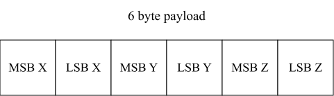
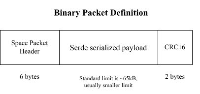

Packet Communication and Serialization
In the aerospace domain, most communication between systems is done using binary protocols instead of ASCII text-based protocols. Binary protocols are usually a lot more space-efficient and are also easier to parse and implement than ASCII based ones.
Furthermore, we also need to exchange our data structures frequently. For example, the ground system might want to send various parameters inside the telecommands, while the on-board software might need to send something like sensor data back to the ground station. The generic term used for converting your data structures into raw bytes and vice-versa is called Serialization and Deserialization.
In this exercise, you are going to learn about some proven ways to perform serialization and deserialization of data in addition to using a really simple binary protocol stack. We will use the serial UART interface from the earlier exercise for the communication between the host computer and the micro:bit v2.
Serialization and Deserialization
In the embedded world, binary protocols based on tightly packed C types are still very common.
The method here is relatively simple. Assuming that all the data structures that you want to
exchange and send around are based on primitive types like u8, u16, f32 etc., you just
pack those types and send their raw byte representation. For example, assuming that you want
to send some raw sensor data, which is represented by 3 u16 values, one for each axes X, Y and Z,
you could pack the bytes into a 6 byte payload like this:

MSB is the most significant byte here while LSB is the least significant byte. It is very common for binary exchange formats to use the big endian data layout format which is a bit easier for humans to interpret. Packing your data like this is relatively straightforward.
This serialization scheme we showed above is also interoperable with other programming languages. However, it still has some disadvantages:
- You might have to swap the bytes to ensure MSB comes first if you have something like a little endian CPU architecture. It might not be sufficient to simply copy your primitive data into a buffer because the bytes in your RAM might have a different layout than the one you want in your buffer.
- You are hand-writing the serialization code. There are serialization libraries available which can do this for you. If you have a lot of data structures, the serialization code amount can be substantial. Every new piece of hand-written code is a potential source of bugs.
- If you send the data to another computer and use another programming language like Python, you also have to write the deserialization in another language.
Serialization is an extremely common task in the computing domain. When using Rust, the
serde framework is the most popular solution for this task. It has
a very smart design that allows to make Rust data structures serializable by implementing
a trait on them, which is usually trivial thanks to the macro system provided by Rust. You can then
combine this with any serializer library that implements the Serializer trait provided by serde.
There are serializer implementations specifically targeting embedded systems. We are going to use the postcard library, which is a perfect fit for embedded systems.
The largest advantage of using serde is that you do not have to hand-write serializers and
deserializers anymore. The only disadvantage is that this solution is not easily cross-language
interoperable. This means that when you exchange serde serialized payloads, the easiest way to deserialize
them is to use a Rust application as well. However, considering that Rust is an excellent tool
for writing small tools and clients on the computer as well, the combination of serde and postcard
has proven itself to be a very good solution for applications in our domain.
In this exercise, we will provide a more complex starter firmware application and a starter host client that you run on your computer to communicate with the firmware via UART. The primary goal will be to implement a simple communication protocol between the host computer which supports the following requests and responses:
PingrequestOkresponse for unit responses with no additional payloadRequestAccelerometerrequest to specifically request housekeeping data.Accelerometerresponse which contains the accelerometer dataSetBlinkFrequencyto set the blink frequency.
Binary protocols
The OSI model provides a good reference model how a communication system might be structured. However, we do not necessarily need to implement all the layers of the OSI model due to the increased complexity which is oftentimes not necessary for simple point-to-point communication via simple protocols like UART.
One proven way is to only include a data-link layer and an application layer protocol. The COBS protocol is an excellent fit as a data-link layer because it is very simple and there are libraries available for Rust, C and Python. This protocol works by removing all zeroes from a packet during an encoding process and adding them back during the decoding process. You can then use zeroes to delimit your packet or frames in the data stream.
This also allows recovery of the decoding process when there is a communication hiccup which is something that can always happen. Parsing for frames or packets now simply involves scanning for start and end markers (usually 0x0) and then decoding everything in between. If there is a communication issue and data is lost, the protocol can resynchronize on the data stream when the next start marker is found. COBS is also computationally inexpensive and has a deterministic worst-case overhead.
The CCSDS space packets protocol is the most commonly used application layer standard in the space domain. It only has one mandated component: A packet primary header with 6 bytes.

- There is a packet type bit to determine whether a packet is a telecommand or a telemetry packet
- There is an application process identifier (APID) which can be used for various purposes, for example as an address ID or as a multiplexing and de-multiplexing ID.
- There is a packet sequence count which can be used on the application layer to detect missed packets.
- There is a data length field to figure out the length of the payload following the header.
Other than that, you are free to define the payload format yourself. Usually, it also is a good idea to include a CRC checksum at the end of the payload which allows to verify data integrity as well. The checksum is computed from the packet data based on a checksum polynomial. There are many types of CRC codes, but one very commonly used CRC in the space domain is the CRC-16-CCITT 16-bit checksum which is sometimes also called CRC-16-IBM3740.
Our final binary packet stack is the combination of the COBS data-link layer,
the CCSDS space packet standard containing a serde serialized payload and the CRC-16-CCITT 16-bit
checksum appended at the end. The packet stack is also visualized in the following diagram:

Step 1 - Creating our serde compatible data models
Before we start defining the data structures that we serialize and exchange between our client application on the computer and the firmware running on the micro:bit v2, let’s talk about the structure of our application. We mentioned that Rust simplifies the task of modularizing and structuring your application. We are now going to apply this in practice.
The client and firmware app will both use the same data structures. We can move those shared
data structures into a microbit-models crate that is used by both apps.
Rust allows managing multiple crates by providing the workspace
feature. Unfortunately, mixed target workspaces do not work well. This is the reason we provide
two workspaces: The firmware workspace which only contains applications and libraries compatible
to the micro:bit v2 target system, and the host workspace which contains components like the
client app or the shared data models library. This is a project structure that we can recommend,
especially as your project grows or when you have one mono-repo for multiple boards and projects.
We are going to create the models library from scratch. Go into the host folder and run
the following command:
cargo init --lib microbit-models
This will create a skeleton library for you. It will also add it to the workspace automatically
by updating the host/Cargo.toml workspace file.
Next, open the crate configuration file host/microbit-models/Cargo.toml which was created for
you and add the following line below the [dependencies] table:
[dependencies]
serde = { version = "1", features = ["derive"] }
Next, we are going to create the data model types for our requests and responses. In this case,
you have a clearly defined set of requests and responses that you need. Rust provides a perfect
solution for this: The enum type which can do so much more than the simplistic Python or C/C++
enumeration types.
Open the host/microbit-models/src/lib.rs file. Add a #![no_std] attribute at the top first.
We do not need the standard run-time in our crate, and we would not be able to use the library
in our firmware application if the run-time was included.
After that add a response module and a request module. Now add a request.rs and a response.rs
file to the src folder. After that, add the pub mod request and pub mod response directives
to lib.rs to include the newly added modules. If you have no idea what’s going on, work
through the Rust book chapter on modules.
#![allow(unused)]
#![no_std]
fn main() {
pub mod request;
pub mod response;
}Inside the request.rs file, define a Request enumeration which includes a ping, the request
HK unit variant and a variant to set the blink frequency. You can use the core::time::Duration
as the type for the frequency parameter.
#![allow(unused)]
fn main() {
pub enum Request {
Ping,
RequestAccelerometer,
SetBlinkFrequency(core::time::Duration)
}
}Note how our enum can now carry additional parameter information. Keep in mind that the compiler
will always reserve the size of the large variant on the stack when creating the enum variant.
If you want to supply something like large binary data, it might be better
to supply this as an arbitrary byte buffer behind the serde payload to avoid large and
expensive stack allocations. For the majority of parameters, supplying the parameters directly
like this is a good solution. One large advantage of this solution is that a match on the
unpacked Request type always enforces that all request variants need to be handled. We
leverage the type system of Rust to our advantage.
However, we are not done yet. You still have to add a few derive attributes to the enumeration.
- Generally, you always want to add the debug
Debugderive. - The
Copyderive makes sense if your data structure is small and copying is cheap. Our data structure might grow larger in the future, but right now it is relatively small, soCopywould be okay - The
Clonederive always makes sense for our request parameter and allows users to make possibly expensive copies of the request type. - The
serde::Serializederive makes our data structure serializable. - The
serde::Deserializederive makes our data structure deserializable. - The
PartialEqandEqderive allow doing equality checks on our request variants and are useful here.
Add all of these derives.
#![allow(unused)]
fn main() {
#[derive(Debug, Copy, Clone, serde::Serialize, serde::Deserialize, PartialEq, Eq)]
pub enum Request {
Ping,
RequestAccelerometer,
SetBlinkFrequency(core::time::Duration)
}
}We also want to print out requests using the defmt library. For this, we actually can just
use the defmt::Format derive. However, we need to feature gate this derive behind a defmt
feature because defmt will not compile for standard systems like your host computer for
technical reasons.
You can add a defmt feature to your models library by adding the following entry to your
Cargo.toml dependency list:
[dependencies]
serde = { version = "1", features = ["derive"] }
defmt = { version = "1", optional = true }
The optional = true will create an implicit defmt feature. The firmware can now activate
the defmt feature of the models library while host tools can leave it deactivated.
Add this defmt feature-gated derive to your Request type. The cfg_attr
built-in attribute can help with this. If you have no idea how this
works, look at the solution below:
#![allow(unused)]
fn main() {
#[derive(Debug, Copy, Clone, serde::Serialize, serde::Deserialize, PartialEq, Eq)]
#[cfg_attr(feature = "defmt", derive(defmt::Format))]
pub enum Request {
Ping,
RequestAccelerometer,
SetBlinkFrequency(core::time::Duration)
}
}Now, do the same for the responses inside the Response module. We want
a CommandCompleted, and AccelerometerData. The AccelerometerData variant should contain
the accelerometer data, but we actually have not defined a model for this type yet.
Define an AccelerometerData structure which has 3 i16 fields with the value in mg SI-units
for each axis first. Include all the derive attributes shown above as well.
#![allow(unused)]
fn main() {
#[derive(Debug, Copy, Clone, serde::Serialize, serde::Deserialize, PartialEq, Eq)]
#[cfg_attr(feature = "defmt", derive(defmt::Format))]
pub struct AccelerometerData {
pub x_mg: i16,
pub y_mg: i16,
pub z_mg: i16
}
}Now, define the Response enumeration like specified above.
#![allow(unused)]
fn main() {
#[derive(Debug, Copy, Clone, serde::Serialize, serde::Deserialize, PartialEq, Eq)]
#[cfg_attr(feature = "defmt", derive(defmt::Format))]
pub enum Response {
CommandCompleted,
AccelerometerData(AccelerometerData)
}
}We have now modelled everything that we require!
You can find the intermediate solution inside
host/microbit-models-solution.
Step 2 - Sending a ping command from the host client
One common solution for writing client application that we use to talk to our boards was to write them in Python for various reasons:
- Massive library support
- Easy to learn and write
- Many students already know Python
However, with Rust, we now have an alternative which is actually viable as well! It has excellent
library support and is well suited for writing command line applications. Furthermore, we
mentioned that we need some Rust component to process our serde serialized payloads. The easiest
solution is to write the client application in Rust as well.
Writing this client from scratch would exceed the scope of this workshop, so we provided a starter client app for you where you only need to add minor additions. However, we are going to walk through the most important components so that you understand what is going on. This is useful if you want to port this app or adopt some of the patterns for your own client app.
Go into the host/client app. This app will actually run on your computer, and that is why it is
in the host folder. Let’s go through this file and figure out what is going on.
We are using the clap library, which is the most popular
Rust library for command line argument processing. It provides an excellent derive based
API. Have a look at the following structure:
#![allow(unused)]
fn main() {
#[derive(clap::Parser)]
#[command(version, about, long_about = None)]
struct Cli {
/// Serial port used for communication with the micro:bit v2
#[arg(short, long)]
serial_port: Option<String>,
// TODO: Step 2 and Step 5. Add new commands here.
}
}You can now supply the serial port to the client app with the -s <port> or --serial-port <port>.
The argument is optional for a reason we will explain later. You can easily extend this structure
by adding your own arguments. We want a --ping argument which should just send a ping to
the firmware. Add that argument. We do not need the short format here, but you can add it
if you want to allow -p for pinging as well. Have a look at the flag argument docs
if you are struggling.
#![allow(unused)]
fn main() {
#[derive(clap::Parser)]
#[command(version, about, long_about = None)]
struct Cli {
/// Serial port used for communication with the micro:bit v2
#[arg(short, long)]
serial_port: Option<String>,
// TODO: Step 2 and Step 5. Add new commands here.
#[arg(long)]
ping: bool
}
}The main function looks like this.
fn main() -> anyhow::Result<()> {
// (...)
}We are using the anyhow library. This is one of the best
libraries available when it comes to simplifying the error handling for applications.
A lot of error handling in host applications boils down to using Result<T, String> to provide
human readable error handling. anyhow supports this style of error handling.
The following line:
#![allow(unused)]
fn main() {
client::setup_logger().with_context(|| "logger setup")?;
}sets up the logger. We are using the fern library.
There are a lot more logging libraries out there. This list
provides alternatives, but fern has proven well for us. The with_context suffix function
is provided by anyhow and allows to add additional context to the error message if the function
fails. The ? then bubbles up the application error to the main function which will then print
the error message and exit the application.
The following code is useful for properly handling Ctrl+C kill signals.
#![allow(unused)]
fn main() {
let kill_signal = Arc::new(AtomicBool::new(false));
let ctrlc_kill_signal = kill_signal.clone();
ctrlc::set_handler(move || {
log::info!("Received Ctrl+C, shutting down...");
ctrlc_kill_signal.store(true, Ordering::Relaxed);
})
.unwrap();
}The kill signal can be used by other application parts to detect an app shutdown initiated by the user.
The following code handles command line argument and configuration file parsing:
#![allow(unused)]
fn main() {
let cli = Cli::parse();
let mut config_file =
client::config_file_init().with_context(|| "config file initialization")?;
let mut toml_str = String::new();
config_file.read_to_string(&mut toml_str)?;
let config: client::toml::Config = toml::from_str(&toml_str)?;
}We are using the toml library to parse a config.toml file inside the client directory.
You can specify the serial port inside this file, for example by providing the following content
in this file:
serial_port = "/dev/ttyACM0"
Considering that the serial port generally stays the same on the same computer and USB port, this
avoids the need of always needing to pass the --serial-port argument. You could also extend
and use this mechanism for other information like IP addresses.
Let’s continue with the next section:
#![allow(unused)]
fn main() {
let serial_port = cli.serial_port.unwrap_or(config.serial_port);
log::info!("Connecting to serial port: {}", serial_port);
let mut serial_transport =
tmtc_utils::transport::serial::PacketTransportSerialCobs::new_from_params(
&serial_port,
// Baudrate.
115200,
// Internal buffer size, should be the maximum expected packet size or a conservative
// buffer size.
4096,
)
.with_context(|| format!("opening serial port {}", serial_port))?;
}The serial port is determined here. The CLI argument actually overrides the configuration from the config file here if it is provided.
We have provided a communication abstraction which takes care of a lot of boilerplate tasks for you:
- It encodes your telecommand (TC) packet with the COBS protocol. This is provided by the
sendmethod. - It provides an API which scans the serial reception buffer of your OS and tries to find COBS
encoded packets. If it finds encoded packets, it decoded them and passed them to a user
provided closure (function). This is provided by the
receivemethod.
Let’s go through the final section of the client:
#![allow(unused)]
fn main() {
// TODO
//
// Step 2: Handle ping CLI command and convert it to ping TC.
// Step 5: Add all the other TCs
loop {
serial_transport
.receive(|_packet| {
// TODO:
//
// Step 2: Handle our decoded packets received from the firmware here.
})
.with_context(|| "serial reception failed")?;
if kill_signal.load(Ordering::Relaxed) {
log::info!("Shutting down...");
break;
}
std::thread::sleep(std::time::Duration::from_millis(100));
}
}The aforementioned receive method is called in a loop. The packet argument is a packet
which was already decoded for you.
The ping flag argument is a boolean field of the cli object. However, how do we actually
create the packet format that we have shown above?
Import the models library first by adding
#![allow(unused)]
fn main() {
use microbit_models as models;
}at the top of your main.rs file of the client.
We are going to create a telecommand (TC) creator function. Create a function named create_tc. We are going to use
the spacepackets library to make
our job easier. Have a look at the documentation of the
CcsdsPacketCreatorOwned::new_tc_with_checksum. This is the most suitable API for creating the
packet. It expects the SpHeader abstraction. The best API is the new_from_apid constructor.
However, what application process ID do we actually want to use? We simply decided to use the value
0x01. It makes sense to create a constant in the models library for this. Go to the microbit-models/src/lib.rs
file and add an APID constant. You need to add the following line in the Cargo.toml of the models
library first:
[dependencies]
arbitrary-int = "2"
Then you can create the APID constant using the u11 type. This encodes that the maximum value
for the APID is limited by 11 bits (2047).
#![allow(unused)]
fn main() {
pub const APID: u11 = u11::new(0x01);
}We also need to create the payload somehow. We mentioned that this is a serde and postcard
serialized payload. Add a request input argument to your create_tc function which has
the models::request::Request type.
The postcard::to_allocvec is the
best API on a host system to serialize the request type. You can use it to create the payload
of the packet.
With all of this information, try to write the whole create_tc packet. You can anyhow to
perform the error handling, so you should return anyhow::Result<CcsdsPacketCreatorOwned>
Intermediate solution, create_tc prototype:
#![allow(unused)]
fn main() {
pub fn create_tc(request: models::request::Request) -> anyhow::Result<CcsdsPacketCreatorOwned> {
//(...)
}
}Intermediate solution, generation of request payload:
#![allow(unused)]
fn main() {
pub fn create_tc(request: models::request::Request) -> anyhow::Result<CcsdsPacketCreatorOwned> {
let request_raw = postcard::to_allocvec(&request).unwrap();
// (...)
}
}Full solution for function:
#![allow(unused)]
fn main() {
pub fn create_tc(request: models::request::Request) -> anyhow::Result<CcsdsPacketCreatorOwned> {
let request_raw = postcard::to_allocvec(&request).unwrap();
CcsdsPacketCreatorOwned::new_with_checksum(
SpHeader::new_from_apid(models::APID),
spacepackets::PacketType::Tc,
&request_raw,
)
.with_context(|| "creating TC packet")
}
}Now you have everything you require to create the TC and send it via the send function of the
serial interface. You can convert CcsdsPacketCreatorOwned to a raw packet using the to_vec
method. Send a ping request if cli.ping is true.
#![allow(unused)]
fn main() {
if cli.ping {
let tc = create_tc(models::request::Request::Ping).with_context(|| "creating ping TC")?;
serial_transport
.send(&tc.to_vec())
.with_context(|| "sending ping TC")?;
}
}Step 3 - Processing telemetry in the client
We are now able to send requests to the firmware, but we also have to add telemetry handling to
the client. Every payload we receive is represented by the models::response::Response type.
The first thing you can do is to create a function called parse_response which expects
a spacepackets::CcsdsPacketReader as input and returns a
anyhow::Result<models::response::Response>.
Create the function prototype first.
#![allow(unused)]
fn main() {
pub fn parse_response(
reader: CcsdsPacketReader,
) -> anyhow::Result<models::response::Response> {
todo!();
}
}The reader object has a function called packet_data that you can use to extract the actual
packet data payload from the full packet.
Then, you can parse the response by using the postcard::from_bytes API.
Use with_context(|| "my error text")? to return an anyhow::Error on a postcard error.
#![allow(unused)]
fn main() {
pub fn parse_response(
reader: CcsdsPacketReader,
) -> anyhow::Result<models::response::Response> {
let user_data = reader.packet_data();
let response = postcard::from_bytes(user_data).with_context(|| "parsing TM response")?;
Ok(response)
}
}Next, we have to update the receive method content to handle the raw decoded frames.
The CcsdsPacketReader::new_with_checksum allows to create a packet reader from the raw byte
representation, assuming that a 16-bit checksum is present at the end of the packet.
Inside the packet handling closure of the receive call, use and match on this function.
In the Ok(..) arm, call the parse_response method we created earlier.
On the error arm, print some error using the log library.
#![allow(unused)]
fn main() {
loop {
serial_transport
.receive(
|packet| match CcsdsPacketReader::new_with_checksum(packet) {
Ok(packet) => match parse_response(packet) {
Ok(response) => todo!(),
Err(e) => todo!()
},
Err(e) => {
log::error!("Failed to read packet: {:?}", e);
}
},
)
.with_context(|| "serial reception failed")?;
if kill_signal.load(Ordering::Relaxed) {
log::info!("Shutting down...");
break;
}
std::thread::sleep(std::time::Duration::from_millis(100));
}
}As the final step, simply print the response using the log library. We implemented Debug on
the response structure. We could even implement Display for an even better human readable
structure, but the Debug implementation is okay for now.
For the error arm, print some suitable error message and the error itself.
#![allow(unused)]
fn main() {
loop {
serial_transport
.receive(
|packet| match CcsdsPacketReader::new_with_checksum(packet) {
Ok(packet) => match parse_response(packet) {
Ok(response) => {
log::info!("RX response: {:?}", response);
}
Err(e) => {
log::error!("Failed to parse response: {:?}", e);
}
},
Err(e) => {
log::error!("Failed to read packet: {:?}", e);
}
},
)
.with_context(|| "serial reception failed")?;
if kill_signal.load(Ordering::Relaxed) {
log::info!("Shutting down...");
break;
}
std::thread::sleep(std::time::Duration::from_millis(100));
}
}With that, we have a basic client we can use to send telecommands and handle telemetry.
You can now use the cargo run -- --help command to display the help text for your command line
application or the cargo run -- --ping command to send a ping.
The client will always go to a listener mode after it has done all TC handling, where it
periodically scans for telemetry packets and prints them.